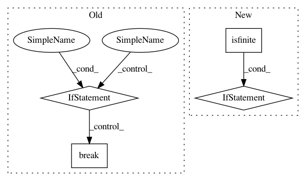

f30505b836141030f50cdd941f9cbc8f4cda0995,scipy/sparse/linalg/isolve/lgmres.py,,lgmres,#Any#Any#Any#Any#Any#Any#Any#Any#Any#Any#Any#,14
Before Change
v_new = axpy(v, v_new, v.shape[0], -alpha) // v_new -= alpha*v
hcur.append(nrm2(v_new))
if hcur[-1] == 0:
// Exact solution.
break
else:
v_new = scal(1.0/hcur[-1], v_new)
vs.append(v_new)
ws.append(z)
hcur = np.asarray(hcur, dtype=Q.dtype)
After Change
// Careful with denormals
alpha = 1/hcur[-1]
if np.isfinite(alpha):
v_new = scal(alpha, v_new)
else:
// v_new either zero (solution in span of previous
// vectors) or we have nans. If we already have
// previous vectors in R, we can discard the current
// vector and bail out.
if j > 1:
j -= 1
break
vs.append(v_new)
ws.append(z)
// -- GMRES optimization problem
In pattern: SUPERPATTERN
Frequency: 3
Non-data size: 4
Instances
Project Name: scipy/scipy
Commit Name: f30505b836141030f50cdd941f9cbc8f4cda0995
Time: 2016-02-29
Author: pav@iki.fi
File Name: scipy/sparse/linalg/isolve/lgmres.py
Class Name:
Method Name: lgmres
Project Name: lmcinnes/pynndescent
Commit Name: 2f218b3ce2b1de05d60acfc563b32765a3e91f41
Time: 2019-10-06
Author: leland.mcinnes@gmail.com
File Name: pynndescent/pynndescent_.py
Class Name:
Method Name: init_rp_tree
Project Name: pymc-devs/pymc3
Commit Name: dbb315a67289157d8375339fad8b42fc4dcd05b2
Time: 2015-06-05
Author: jsalvatier@gmail.com
File Name: pymc3/distributions/distribution.py
Class Name: Distribution
Method Name: get_test_val
Project Name: scipy/scipy
Commit Name: f30505b836141030f50cdd941f9cbc8f4cda0995
Time: 2016-02-29
Author: pav@iki.fi
File Name: scipy/sparse/linalg/isolve/lgmres.py
Class Name:
Method Name: lgmres